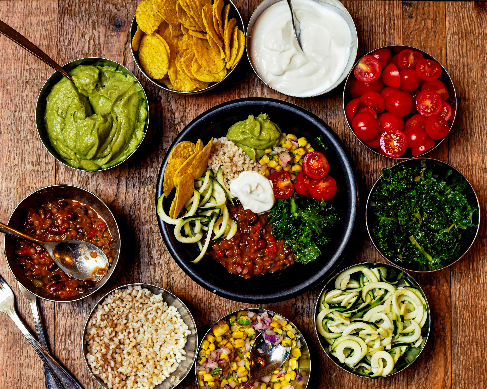

Welcome!
Welcome to the Gateway of Green: Exploring Vegetarianism
Embark on a journey to discover the vibrant world of vegetarianism, where plant-powered living intersects with health, ethics, and sustainability. Here, we celebrate the art and science of a lifestyle that embraces the richness of fruits, vegetables, grains, and legumes. Whether you're a seasoned vegetarian, curious about a plant-based lifestyle, or simply seeking inspiration for mindful eating, our virtual haven awaits.
🌱 Plant-Powered Living: Uncover the joys and benefits of a diet centered around the abundance of plant-based goodness. From delectable recipes to nutritional insights, we delve into the art of crafting delicious, balanced meals without a trace of meat.
🌏 Sustainability Spotlight: Dive into the environmental impact of dietary choices. Explore how vegetarianism plays a pivotal role in reducing carbon footprints, preserving ecosystems, and contributing to a more sustainable, eco-friendly planet.
🌿 Ethics and Compassion: Connect with the ethical dimensions of vegetarianism, understanding the profound impact dietary choices can have on animal welfare. Delve into the philosophy that extends beyond the plate, fostering a compassionate lifestyle that resonates with both humanity and the animal kingdom.
👩🍳 Culinary Adventures: Embark on culinary adventures that redefine the possibilities of vegetarian cuisine. From exotic international flavors to creative meat alternatives, discover the exciting and diverse world of plant-based cooking.
🚀 Start Your Journey: Whether you're taking your first steps into vegetarianism or seeking fresh perspectives as a seasoned plant enthusiast, our resources cater to all. Explore articles, recipes, and community stories to fuel your journey towards a greener, healthier, and more compassionate lifestyle.
Join us in celebrating the power of plants—where every bite is a step towards a healthier you and a happier planet. Let the adventure begin!"
So what truly is vegetarianism?
Vegetarianism is a conscious dietary and lifestyle choice that revolves around abstaining from the consumption of meat, poultry, and seafood. Instead, individuals who embrace vegetarianism focus on deriving their nutritional needs from an array of plant-based sources, including fruits, vegetables, grains, legumes, nuts, and seeds.
The Ethical Compass: Beyond the plate, vegetarianism extends into the realm of ethics, with many practitioners driven by a profound commitment to animal welfare. By choosing not to partake in the consumption of animal products, vegetarians actively contribute to a more compassionate and humane treatment of the creatures that share our planet.
A Greener Footprint: One of the hallmark features of vegetarianism lies in its positive impact on the environment. Adopting a vegetarian diet significantly reduces an individual's carbon footprint, as the production of plant-based foods generally demands fewer resources and generates fewer greenhouse gas emissions compared to traditional livestock farming.
Historical Roots and Modern Trends: While the concept of vegetarianism has ancient roots, its popularity has surged in modern times. Today, a diverse range of people, including athletes, celebrities, and everyday individuals, are embracing vegetarianism for various reasons, from health and environmental concerns to a desire for culinary exploration.
Nutrient-Rich Diversity: Contrary to misconceptions, a well-planned vegetarian diet provides a rich and diverse array of nutrients. From protein-packed legumes to iron-rich leafy greens, vegetarianism encourages a colorful and balanced approach to nutrition that contributes to overall well-being.
Culinary Creativity: Vegetarianism sparks culinary creativity, challenging individuals to explore and experiment with a wide range of plant-based ingredients. From hearty veggie stews to innovative meat alternatives, the world of vegetarian cuisine is a vibrant and evolving tapestry of flavors and textures.
Pros and Cons of Vegetarianism:
Pros:
1. Health Benefits: Adopting a vegetarian diet is associated with numerous health advantages, including lower risks of heart disease, hypertension, and certain types of cancer. Plant-based diets are often rich in vitamins, fiber, and antioxidants, promoting overall well-being.
2. Environmental Sustainability: A key pro of vegetarianism lies in its positive environmental impact. Choosing plant-based foods contributes to reduced greenhouse gas emissions, less deforestation, and a more sustainable use of resources, fostering a healthier planet.
3. Ethical Treatment of Animals: Many individuals choose vegetarianism as a way to align their dietary choices with ethical values. By abstaining from meat consumption, vegetarians actively support the humane treatment of animals, promoting compassion and kindness.
4. Weight Management: Vegetarian diets are often associated with weight management and, in some cases, weight loss. The emphasis on whole, nutrient-dense foods can contribute to a healthier body weight and improved metabolism.
Cons:
1. Nutrient Challenges: One of the challenges of a vegetarian diet is ensuring an adequate intake of certain nutrients, such as protein, iron, and B12. Careful planning and supplementation may be necessary to meet these nutritional needs.
2. Social and Cultural Considerations: Vegetarians may face social challenges, especially in cultures where meat is a central component of meals. Dining out or attending social gatherings can sometimes be more complicated for those with specific dietary restrictions.
3. Limited Food Options: Depending on location and availability, vegetarians may find fewer options when dining out or shopping for convenience foods. This limitation can require additional effort in meal planning and preparation.
4. Potential for Imbalance: Without proper planning, a vegetarian diet may become imbalanced, lacking in essential nutrients. It's crucial to ensure a varied and well-rounded selection of plant-based foods to avoid nutritional deficiencies.
Click here to learn more about the Pros and Cons of Vegetarianism

Historical Roots: Vegetarianism has ancient origins, with records of vegetarian practices dating back to ancient Greek philosophers, such as Pythagoras, who advocated for a plant-based diet.
Lifespan Pioneers: Some of history's most brilliant minds and notable figures were vegetarians, including Albert Einstein, Leonardo da Vinci, Mahatma Gandhi, and Isaac Newton.
Longevity Studies: Numerous studies suggest that a vegetarian diet may contribute to increased longevity. Certain populations with high numbers of centenarians, such as the residents of Okinawa, Japan, traditionally follow plant-centric diets.

Meat Alternatives: The modern market offers a diverse range of plant-based meat alternatives. From burgers and sausages made of soy or pea protein to jackfruit tacos, these alternatives mimic the taste and texture of meat, catering to both vegetarians and those curious about reducing their meat intake.
Iron-Rich Plant Foods: Contrary to the misconception that vegetarians struggle with iron intake, several plant-based foods are rich in this essential mineral. Spinach, lentils, tofu, and fortified cereals are excellent sources of iron.
Ethical Labels: The rise of vegetarianism has led to the creation of various ethical labels and certifications, such as "Certified Vegan" and "Cruelty-Free," helping consumers make informed choices aligned with their values.

Eco-Friendly Impact: Adopting a vegetarian diet can significantly reduce an individual's carbon footprint. The production of plant-based foods generally requires fewer resources and produces fewer greenhouse gas emissions compared to raising livestock for meat.Venturing further into the realm of eco-conscious dining, a vegetarian lifestyle not only benefits personal health but also makes a powerful positive impact on the environment. Embracing plant-based living is akin to becoming an eco-champion, as it significantly diminishes an individual's carbon footprint. The environmental advantages stem from the inherently lower resource requirements of cultivating plant-based foods compared to the resource-intensive processes involved in raising livestock for meat.
Worldwide Variations: Different regions have unique vegetarian cuisines. For example, Indian cuisine has a rich tradition of vegetarian dishes, with classics like paneer tikka and dal. In Ethiopia, injera (a type of flatbread) paired with lentil or vegetable stews is a staple of the vegetarian diet.
Meatless Mondays: The Meatless Monday campaign was created to encourage people worldwide to go meat-free for one day a week. This simple initiative aims to reduce meat consumption for health and environmental benefits.
Surprising Vegetarian Athletes: Beyond just endurance athletes, several professional athletes in traditionally meat-heavy sports, such as football and basketball, have adopted vegetarian or vegan diets to enhance performance. This challenges the stereotype that athleticism requires a meat-centric diet.
Flexitarianism on the Rise: The term "flexitarian" refers to individuals who primarily follow a vegetarian diet but occasionally eat meat. This flexible approach to plant-based eating is becoming increasingly popular as people explore ways to reduce their meat consumption without fully committing to a vegetarian lifestyle.